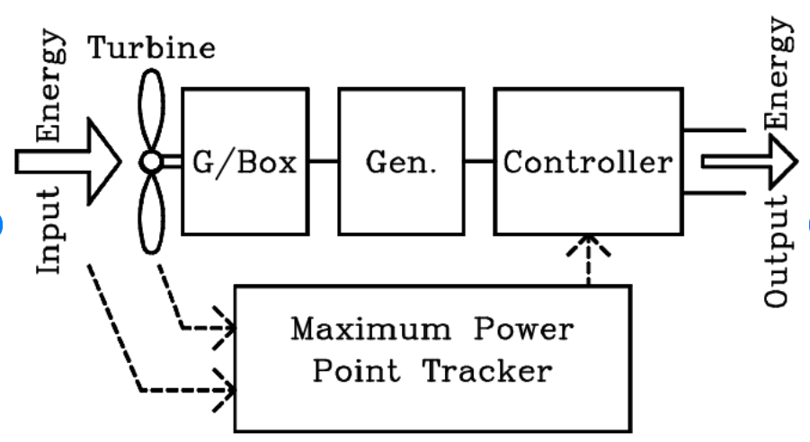

Block Diagram
Explanation
A tidal power plant uses the natural rise and fall of seawater due to tidal forces to generate electricity. The system includes a tidal basin separated by a barrage with sluice gates and turbines. During high tide, water enters the basin through the gates; when the tide recedes, the stored water flows back through turbines, producing electricity. Turbine generators convert the kinetic and potential energy of moving water into electrical energy. This system is suitable for coastal villages where tidal amplitude is significant, offering a clean, predictable, and renewable power source. It reduces dependence on diesel-based generation, supports local microgrids, and can be integrated with small-scale desalination plants to produce freshwater using excess energy. Maintenance is low, and it contributes to sustainable rural development along coastlines.
The output power is supplied to nearby loads such as a coastal village for lighting, communication, and refrigeration. Tidal energy is predictable, renewable, and has a low carbon footprint. It is especially useful for remote coastal communities where conventional grid power is unavailable or unreliable.
← Back to Home